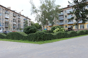
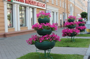
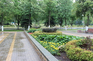
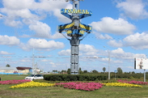
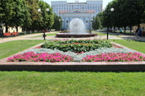
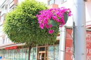

Опыт
Многолетняя работа в сфере городского озеленения и благоустройства.
Благоустройство, озеленение и выращивание растений в Гомеле.
Государственное предприятие «Красная гвоздика» является крупнейшим предприятием в области благоустройства и озеленения городских и загородных территорий.
Специалисты предприятия имеют высокую квалификацию и многолетний опыт работы в городском озеленении.
Работы по благоустройству, выполняемые предприятием, отличаются высокохудожественным уровнем, высоким качеством и быстрыми сроками исполнения.
Уровень цен на производимую продукцию является приемлемым. Четкое соблюдение сроков исполнения, гарантия на выполненные работы и индивидуальный подход к каждому клиенту — важные принципы работы предприятия.
Многолетняя работа в сфере городского озеленения и благоустройства.
Высокий уровень исполнения работ и внимательный подход к деталям.
Соблюдение сроков, гарантия на выполненные работы и индивидуальное сопровождение.





